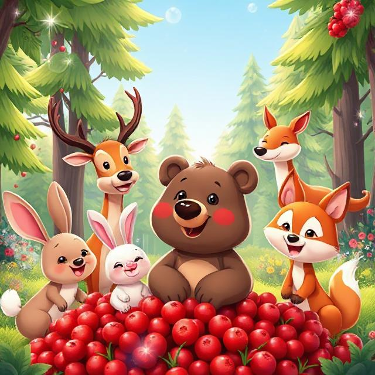

A Forest Tale About Kindness and Sharing
Deep in the peaceful forest, where the trees stood tall and birds sang cheerful songs, lived a young brown bear named Benny.
Benny had soft fur, a round belly, and a big love for berries.
Every morning, Benny would take a basket and wander through the woods, searching for the juiciest berries he could find — blueberries, blackberries, raspberries, and his favorite of all… red forest berries that grew only in secret, sunny spots.
One sunny morning, while sniffing the air for the scent of sweetness, Benny stumbled upon something amazing.
“Oh wow...” he whispered.
Right there, glowing in the morning light, was a giant bush full of red, juicy berries. They were round, ripe, and glistening like rubies.
“This is the biggest berry bush I’ve ever seen!” Benny said, licking his lips.
He picked one.
Pop! So sweet.
He picked another.
Pop! Even sweeter.
Before long, he filled his basket to the brim — and his belly too!
Just as Benny was about to settle down for a quiet snack, he heard soft footsteps behind him.
“Hi, Benny!” said Rabbit, hopping out from behind a tree. Her ears drooped a little. “Do you have any food? I couldn’t find a single berry today.”
Then came Deer, stepping gently through the leaves.
“I’ve been walking for hours,” she said. “My legs are tired, and my tummy’s empty.”
Finally, Fox appeared, tail swishing behind him.
“I smelled something delicious,” he said. “Is it… berries?”
Benny looked down at his basket — full of beautiful, perfect berries.
He looked up at his friends — hungry, tired, and hoping for a bite.
For a moment, he felt a tug in his tummy.
“I found them. I picked them. I was going to eat them all,” he thought.
But then Benny looked at his friends again — their hopeful eyes, their soft smiles — and he felt something warm rise up in his chest.
Kindness.
He took a deep breath, then smiled wide.
“Let’s share!” Benny said cheerfully. “There’s more than enough for all of us.”
So they all sat together under the shade of the berry bush. Benny passed around the basket, and soon everyone was munching and laughing, juice dripping down their chins.
The forest echoed with giggles and crunches and happy sighs.
Benny took a bite and looked around.
His belly was full, yes — but his heart felt even fuller.
“I’m glad I shared,” he thought. “This feels even better than eating berries alone.”
From that day on, Benny always remembered:
Good berries taste even better with good friends.